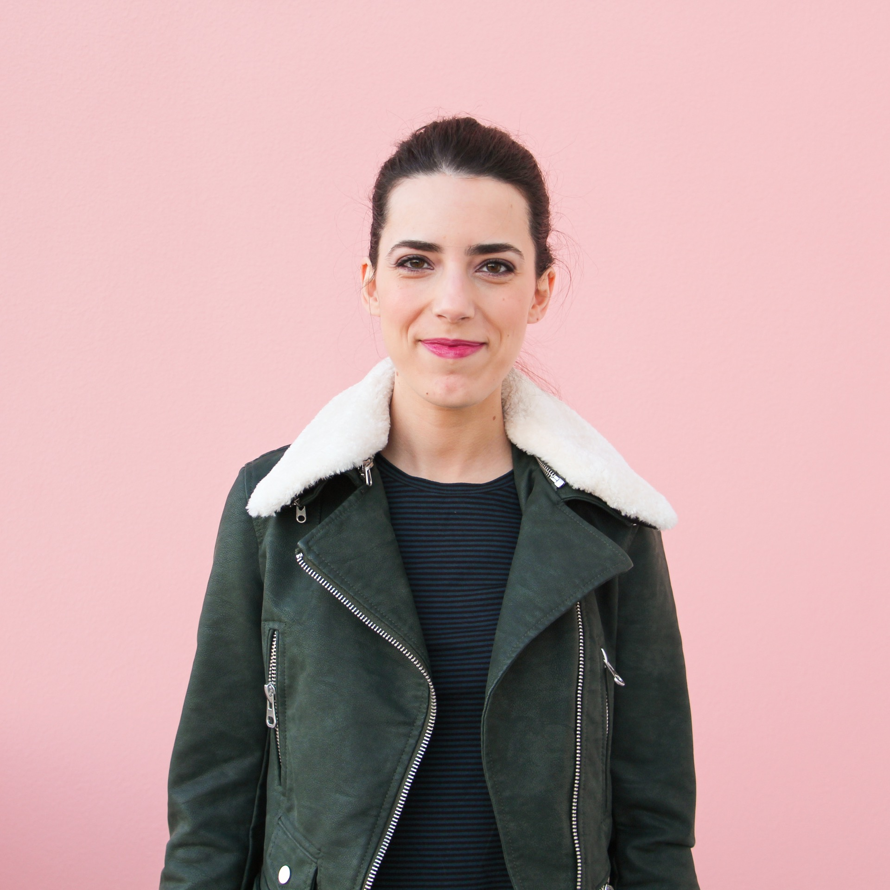

Sixteen years ago, I started as an Industrial Engineer developing lean projects at Bosch. I've always loved math and engineering, but with time I realised that my creative side needed to come out more often and play.
I was passionate about creating products with the potential to make this world better, so I went to LSE to study entrepreneurship. I finally found "home" when I participated in a Startup Weekend.
After that, if I wasn't working in startups, I was organizing tech events. As I wanted to do something about the lack of diversity in the tech community, I ended up organizing the first programming workshop for women in Portugal — Rails Girls Porto. Since then, I have been working in DEIB among RGSoC, Geekettes and other initiatives.
As I wanted to create my own companies, wearing different hats at different stages businesses, allowed me to build up my knowledge in design, marketing, operations, product and project management.
In 2022 I founded 3101, a studio that aims to create regenerative companies. We're a small team, and we're super excited to announce our first project — Humankind Works.
Fun facts: I grew up watching Saint Seya and X-Men, and nowadays I am watch Haikyuu and Noragami; before I was accepted in Engineering, I got in two other colleges to major in Architecture and Microbiome and Genetics Biology; I eat ice cream for breakfast - a healthy version!
P.S.: This website is under construction. If you want to reach out, send an email to hello@anasofiapinho.com or reach me on Linkedin. Speak soon! :)